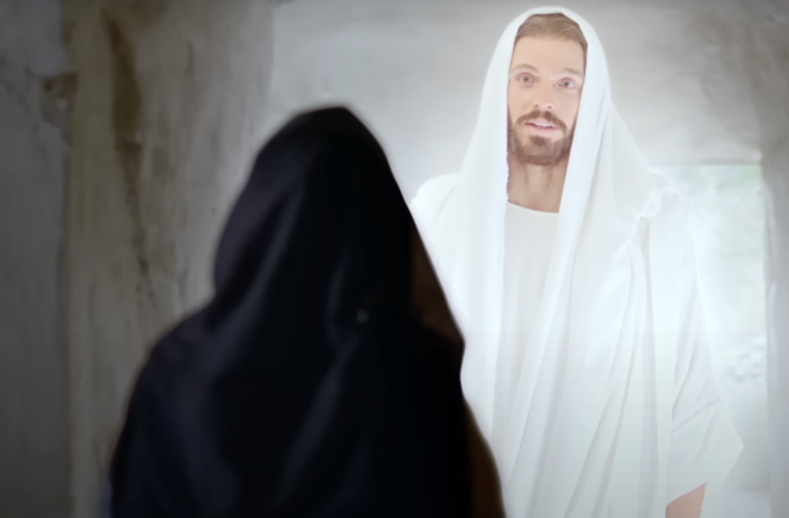
Las mujeres en el sepulcro
24 de septiembre de 2024
Las mujeres que habían estado al lado de la cruz de Cristo esperaron velando que transcurriesen las horas del sábado. El primer día de la semana,
muy temprano, se dirigieron a la tumba llevando consigo especias preciosas
para ungir el cuerpo del Salvador. No pensaban acerca de su resurrección de
los muertos. El sol de su esperanza...
Leer más...
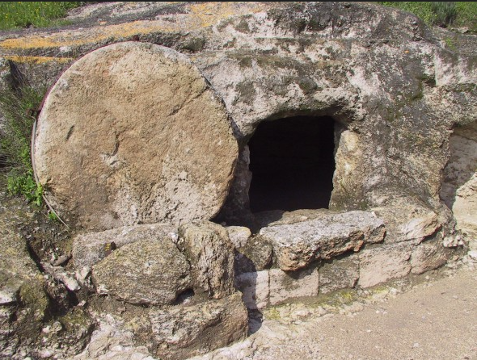
La piedra fue quitada
23 de septiembre de 2024
La historia de la resurrección aparece en los cuatro evangelios. El autor de
cada uno de ellos presenta el relato desde una perspectiva diferente, pero todos
ellos registran los conceptos centrales presentes también en 1 Corintios 15:1 al 8...
Leer más...
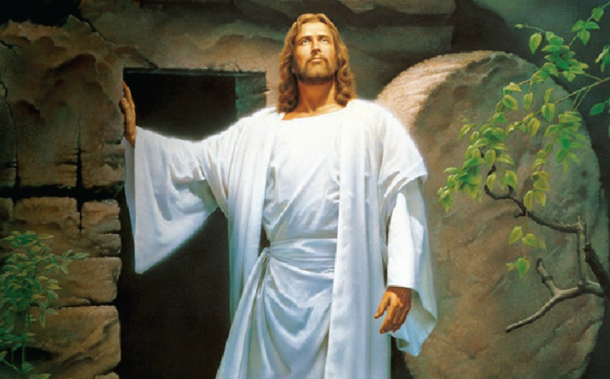
Recocijo en la resurrección
22 de septiembre de 2024
Los escritores de los cuatro evangelios coinciden en que Jesús murió en el
día que identifican como “la preparación” (Mat. 27:62; Mar. 15:42; Luc. 23:54;
Juan 19:14, 31, 42). La mayoría de los comentadores entienden la expresión como una referencia...
Leer más...
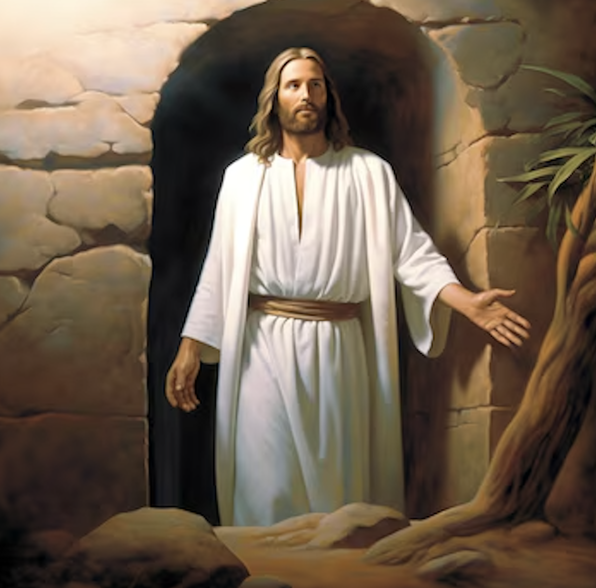
El Señor resucitado
21 de septiembre de 2024
La crucifixión de Jesús fue un oscuro fin de semana para los discípulos mientras no solo lidiaban con la muerte de su Maestro, sino también temían por
su propia vida (Juan 20:19).
En Marcos 16, el último capítulo del Evangelio de Marcos, veremos lo que sucedió tras la muerte de Jesús.
Leer más...
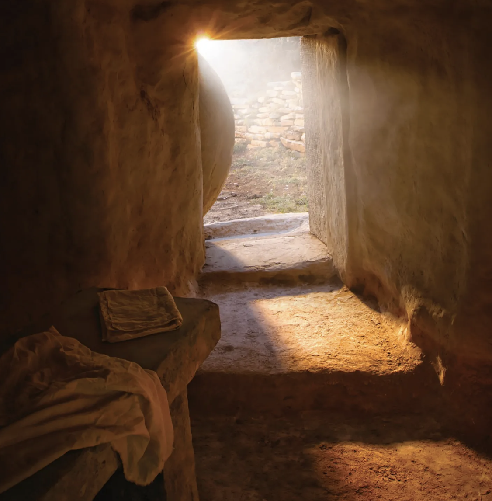
Llevado a descansar
19 de septiembre de 2024
En este pasaje, José de Arimatea aparece por única vez en el Evangelio de Marcos. Era un miembro respetado del Sanedrín y un integrante de los grupos sociales selectos. Como hombre rico y respetado, tenía prestigio ante el gobernador, lo que explica...
Leer más...
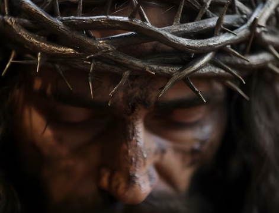
Abandonado por Dios
18 de septiembre de 2024
Una oscuridad sobrenatural descendió sobre el Calvario desde aproximadamente el mediodía hasta las 3 de la tarde. “Cuando llegó la hora sexta (elmediodía), hubo tinieblas sobre toda la tierra hasta la hora novena (las 3 de la tarde)” (Mar. 15:33)....
Leer más...
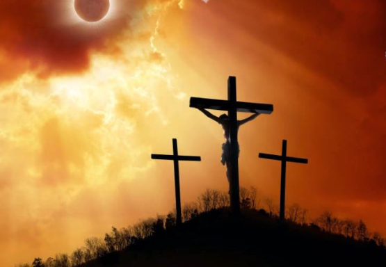
La crucifixión
17 de septiembre de 2024
En este punto del relato de la Pasión, Jesús es una víctima silenciosa, controlada por gente empeñada en su muerte. A lo largo del Evangelio, y hasta su arresto, él estuvo a cargo de la acción...
Leer más...

¡Salve, rey de los judíos!
16 de septiembre de 2024
Los romanos utilizaban una severa forma de flagelación como preparación de los prisioneros para la ejecución. La víctima era despojada de su ropa, atada a un poste y azotada con un látigo de tiras de cuero en cuyos extremos adherían trozos...
Leer más...
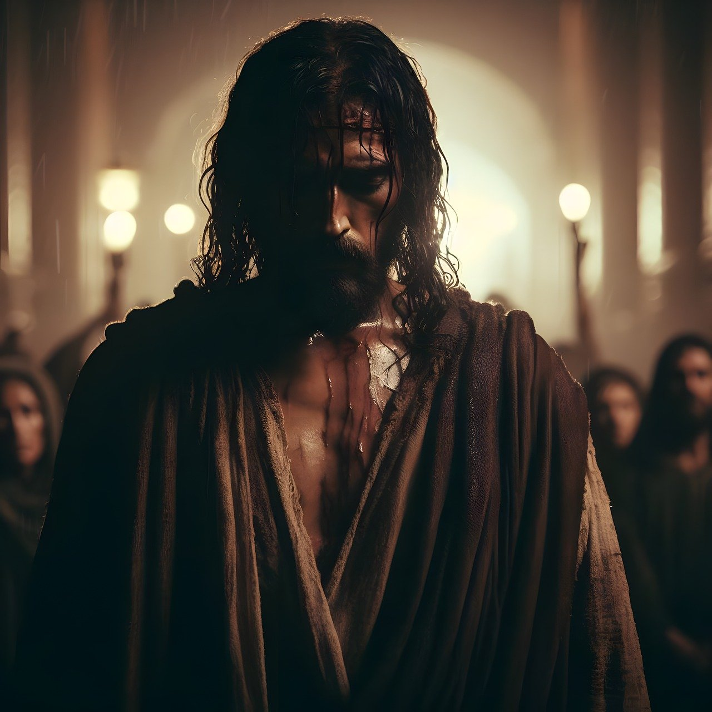
¿Eres tú el rey de los judíos?
15 de septiembre de 2024
Poncio Pilato fue gobernador de Judea entre los años 26 y 36 d.C. No era un líder amable, y varias de sus acciones causaron consternación entre los habitantes del país (compara con Luc. 13:1). El juicio de Jesús resultó en una sentencia de muerte por blasfemia. Sin embargo, bajo el Gobierno romano...
Leer más...
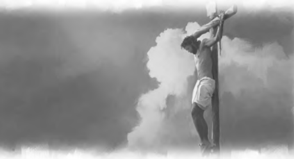
Juzgado y Crucificado
14 de septiembre de 2024
Marcos 15 es el corazón del relato de la Pasión. Allí se presenta el juicio de Jesús, su condena, la burla de los soldados, su crucifixión, su muerte y su traslado al sepulcro. En este capítulo, los eventos son presentados con...
Leer más...
Dios te conoce
13 de septiembre de 2024
“Mientras los juramentos envilecedores todavía estaban frescos en los labios de Pedro y el agudo canto del gallo repercutía en sus oídos, el Salvador se desvió de sus ceñudos jueces y miró de lleno a su pobre discípulo. Al mismo tiempo, los ojos de Pedro fueron atraídos hacia...
Leer más...
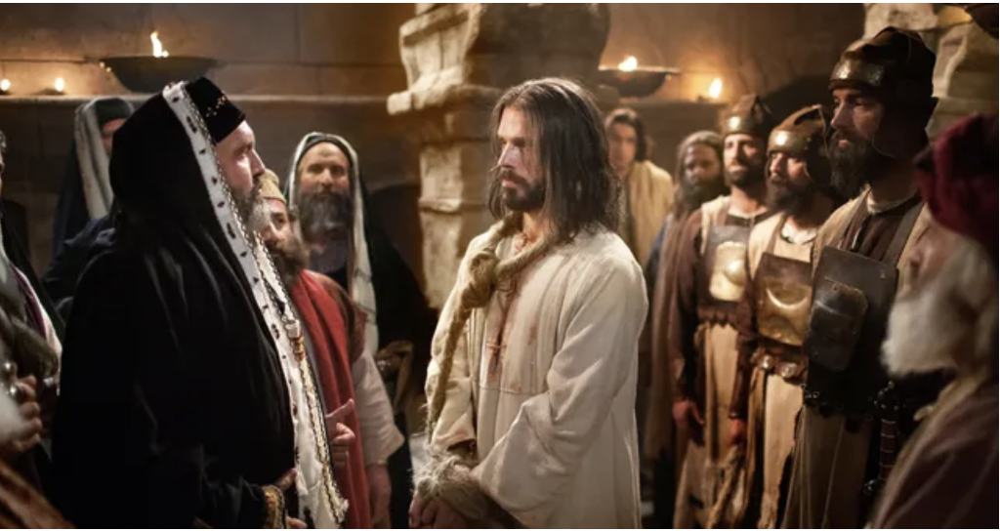
¿Quién eres?
12 de septiembre de 2024
Marcos 14:53 al 59 describe el momento en que Jesús es traído ante el Sanedrín y la primera parte del juicio. Se trata de un ejercicio de frustración. Los líderes tratan una y otra vez de hacer valer sus acusaciones contra Jesús. El escritor del Evangelio destaca que el testimonio era falso y que...
Leer más...
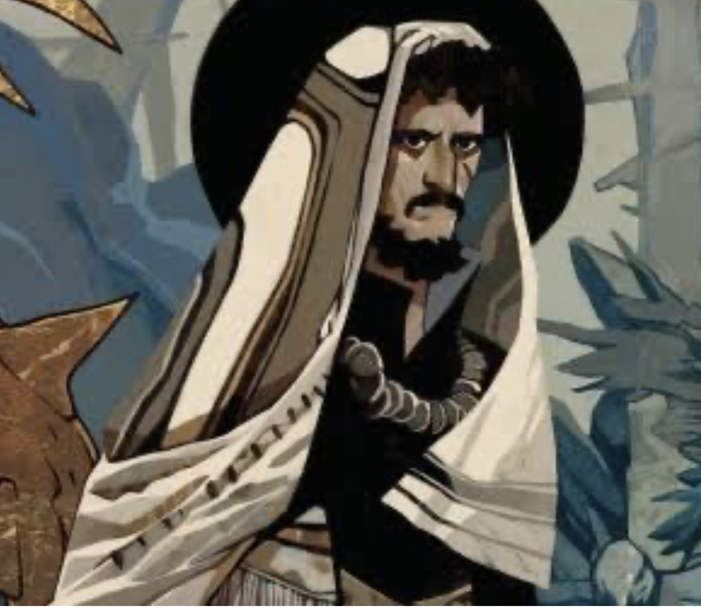
Dejando todo para huir de Jesús
11 de septiembre de 2024
Es sorprendente que uno de los colaboradores más cercanos de Jesús lo entregara a sus enemigos. Los evangelios no entran en grandes detalles acerca de la motivación de Judas. Pero...
Leer más...
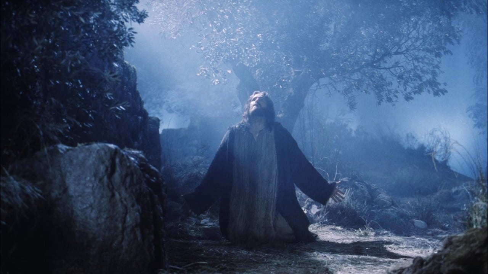
Getsemaní
10 de septiembre de 2024
Dejando atrás la ciudad amurallada de Jerusalén, donde habían comido la Pascua, Jesús y sus discípulos cruzaron el valle de Cedrón en dirección a un jardín en la ladera del Monte de los Olivos. El nombre Getsemaní significa “prensa de aceite”, lo que sugiere que había una prensa para procesar aceite...
Leer más...

Siguiendo a Jesús en un mundo que se aparta de Dios
08 de septiembre de 2024
Vivimos en un mundo que se aleja cada vez más de los valores y principios de Dios. El bombardeo constante de ideas, ideologías y modas que contradicen las enseñanzas bíblicas nos desafía a vivir nuestra fe de manera auténtica. Como cristianos, estamos llamados...
Leer más...
¿Con qué me presentaré ante Dios?
08 de septiembre de 2024
Estos versículos reflejan una serie de preguntas retóricas que subrayan la insuficiencia de los sacrificios externos cuando el corazón no está alineado con la voluntad de Dios. El profeta Miqueas plantea estas preguntas para mostrar que la mera práctica ritualista no es ...
Leer más...
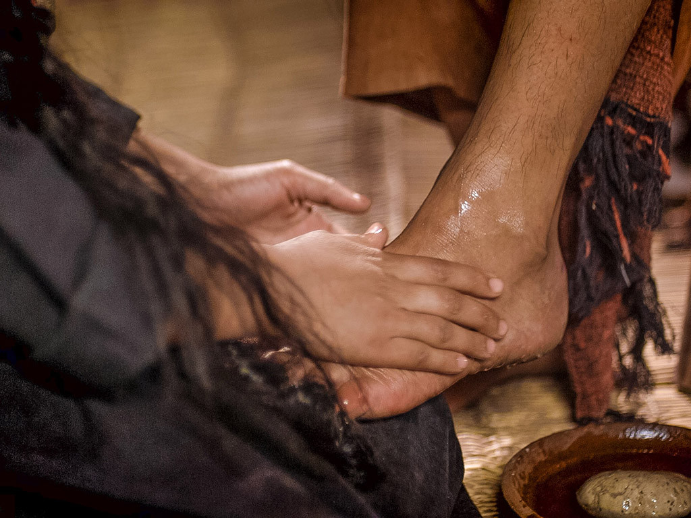
Inolvidable
08 de septiembre de 2024
Marcos 14:1 indica que habían transcurrido dos días desde la Pascua. Esta reunión ocurrió probablemente el martes de noche o el miércoles de esa semana. Los líderes religiosos tenían un plan y un momento oportuno para llevarlo a cabo. Solo necesitaban un medio para alcanzar su objetivo, y provendría de un lugar...
Leer más...
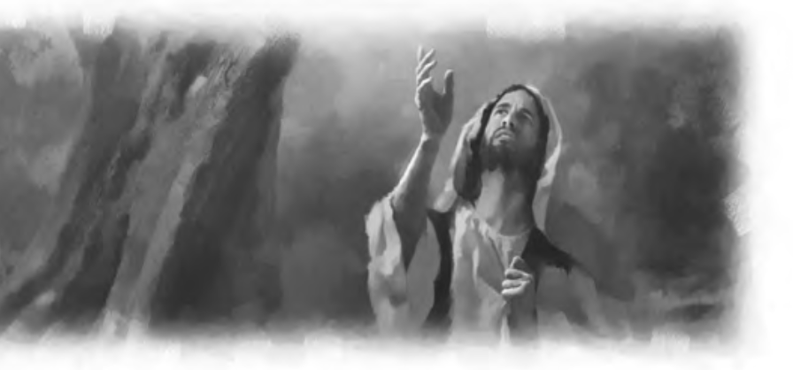
Apresado y Juzgado
07 de septiembre de 2024
Los capítulos 14 a 16 de Marcos son conocidos como “el relato de la Pasión” porque describen el sufrimiento, la muerte y la resurrección de Jesús. Como fue señalado en la lección 9, los últimos seis capítulos de Marcos cubren
apenas cerca de una semana. La mayoría de los eventos allí registrados ocurren el jueves y el viernes de la semana de la Pasión. La muerte de Jesús tiene lugar el viernes; y su resurrección, el domingo.
Leer más...